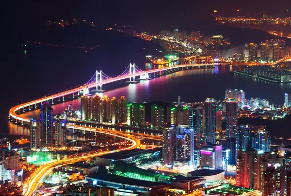
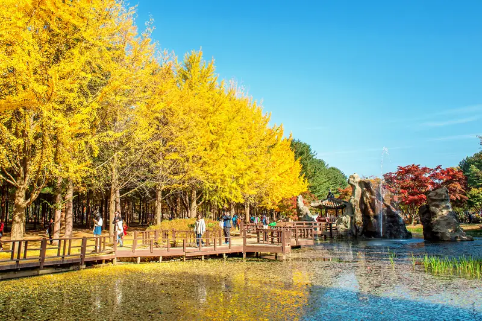
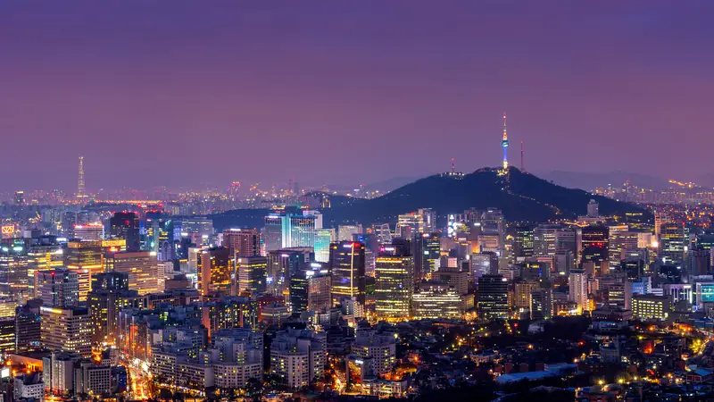

🌸 Điểm tham quan (ưu tiên nội dung, ảnh bấm để phóng)
Chạm để phóng to
Busan
Busan
Busan là thành phố lớn thứ hai của Hàn Quốc, nằm ở phía đông nam bán đảo Triều Tiên, giáp biển Nhật Bản. Với diện tích khoảng 770 km² và dân số hơn 3,4 triệu người, Busan là trung tâm kinh tế, văn hóa và du lịch quan trọng của miền Nam Hàn Quốc. Trước đây, thành phố từng là cảng tị nạn trong Chiến tranh Triều Tiên (1950–1953), nay đã phát triển thành một đô thị hiện đại kết hợp hài hòa giữa thiên nhiên và đô thị.
Busan nổi tiếng với Làng văn hóa Gamcheon, chợ cá Jagalchi, đền Yonggingsa và tàu ray ngắm biển Haeundae Blueline. Văn hóa nơi đây mang nét trẻ trung, cởi mở, phản ánh tinh thần biển cả và con người thân thiện. Ẩm thực Busan đặc trưng với súp cá cay (Maeuntang), bánh gạo cay (Tteokbokki) và mì lạnh Milmyeon.
Với khí hậu ôn hòa, cảnh quan đa dạng và nền văn hóa năng động, Busan là điểm đến hấp dẫn bậc nhất Hàn Quốc.
Busan là thành phố lớn thứ hai của Hàn Quốc, nằm ở phía đông nam bán đảo Triều Tiên, giáp biển Nhật Bản. Với diện tích khoảng 770 km² và dân số hơn 3,4 triệu người, Busan là trung tâm kinh tế, văn hóa và du lịch quan trọng của miền Nam Hàn Quốc. Trước đây, thành phố từng là cảng tị nạn trong Chiến tranh Triều Tiên (1950–1953), nay đã phát triển thành một đô thị hiện đại kết hợp hài hòa giữa thiên nhiên và đô thị.
Busan nổi tiếng với Làng văn hóa Gamcheon, chợ cá Jagalchi, đền Yonggingsa và tàu ray ngắm biển Haeundae Blueline. Văn hóa nơi đây mang nét trẻ trung, cởi mở, phản ánh tinh thần biển cả và con người thân thiện. Ẩm thực Busan đặc trưng với súp cá cay (Maeuntang), bánh gạo cay (Tteokbokki) và mì lạnh Milmyeon.
Với khí hậu ôn hòa, cảnh quan đa dạng và nền văn hóa năng động, Busan là điểm đến hấp dẫn bậc nhất Hàn Quốc.
Làng văn hóa Gamcheon
Làng văn hóa Gamcheon
Làng văn hóa Gamcheon ở Busan được mệnh danh là “Santorini của Hàn Quốc” nhờ những ngôi nhà đầy màu sắc xếp tầng trên sườn núi hướng ra biển. Nơi đây thu hút du khách với những con hẻm nghệ thuật, bức tranh tường sống động, và các quán cà phê, cửa hàng thủ công nhỏ xinh. Du khách có thể trải nghiệm vẽ tranh, làm đồ lưu niệm, hoặc chụp ảnh tại các điểm check-in nổi tiếng như “Cậu bé và chú cáo”. Gamcheon là nơi giao hòa giữa văn hóa truyền thống và sáng tạo hiện đại.
Làng văn hóa Gamcheon ở Busan được mệnh danh là “Santorini của Hàn Quốc” nhờ những ngôi nhà đầy màu sắc xếp tầng trên sườn núi hướng ra biển. Nơi đây thu hút du khách với những con hẻm nghệ thuật, bức tranh tường sống động, và các quán cà phê, cửa hàng thủ công nhỏ xinh. Du khách có thể trải nghiệm vẽ tranh, làm đồ lưu niệm, hoặc chụp ảnh tại các điểm check-in nổi tiếng như “Cậu bé và chú cáo”. Gamcheon là nơi giao hòa giữa văn hóa truyền thống và sáng tạo hiện đại.
Đền Haedong Yonggungsa
Đền Haedong Yonggungsa
Đền Yonggungsa ở Busan là một trong những ngôi chùa hiếm hoi tại Hàn Quốc nằm ven biển, nổi tiếng với vị trí độc đáo trên vách đá hướng ra đại dương. Được xây dựng từ năm 1376, ngôi đền mang kiến trúc cổ kính hòa quyện cùng cảnh quan thiên nhiên hùng vĩ. Du khách đến đây có thể ngắm bình minh tuyệt đẹp trên biển, dạo bậc đá cầu nguyện cho may mắn, và chiêm ngưỡng tượng Phật Quan Âm khổng lồ. Yonggungsa là điểm đến thanh tịnh, mang lại trải nghiệm tâm linh sâu sắc và bình yên.
Đền Yonggungsa ở Busan là một trong những ngôi chùa hiếm hoi tại Hàn Quốc nằm ven biển, nổi tiếng với vị trí độc đáo trên vách đá hướng ra đại dương. Được xây dựng từ năm 1376, ngôi đền mang kiến trúc cổ kính hòa quyện cùng cảnh quan thiên nhiên hùng vĩ. Du khách đến đây có thể ngắm bình minh tuyệt đẹp trên biển, dạo bậc đá cầu nguyện cho may mắn, và chiêm ngưỡng tượng Phật Quan Âm khổng lồ. Yonggungsa là điểm đến thanh tịnh, mang lại trải nghiệm tâm linh sâu sắc và bình yên.
Chạm để phóng to
Chợ cá Jagalchi
Chợ cá Jagalchi
Chợ cá Jagalchi là chợ hải sản lớn nhất Hàn Quốc, biểu tượng văn hóa đặc trưng của Busan. Nằm bên cảng Nampo, nơi đây nổi tiếng với không khí nhộn nhịp, những quầy hải sản tươi sống và ẩm thực biển đa dạng. Du khách có thể tận mắt chọn hải sản vừa đánh bắt, sau đó thưởng thức ngay tại chỗ với phong cách chế biến truyền thống. Tầng thượng chợ còn có góc nhìn toàn cảnh biển Busan, mang đến trải nghiệm chân thực về đời sống ngư dân và văn hóa biển Hàn Quốc.
Chợ cá Jagalchi là chợ hải sản lớn nhất Hàn Quốc, biểu tượng văn hóa đặc trưng của Busan. Nằm bên cảng Nampo, nơi đây nổi tiếng với không khí nhộn nhịp, những quầy hải sản tươi sống và ẩm thực biển đa dạng. Du khách có thể tận mắt chọn hải sản vừa đánh bắt, sau đó thưởng thức ngay tại chỗ với phong cách chế biến truyền thống. Tầng thượng chợ còn có góc nhìn toàn cảnh biển Busan, mang đến trải nghiệm chân thực về đời sống ngư dân và văn hóa biển Hàn Quốc.
Tàu ray ngắm biển Haeundae Blueline
Tàu ray ngắm biển Haeundae Blueline
Tàu ray ngắm biển Haeundae Blueline là trải nghiệm du lịch độc đáo tại Busan, đưa du khách dọc theo bờ biển Haeundae tuyệt đẹp. Tuyến tàu chạy từ Mipo đến Cheongsapo và Songjeong, mang đến tầm nhìn ngoạn mục ra đại dương xanh biếc. Du khách có thể chọn Sky Capsule – khoang tàu nhỏ lãng mạn cho hai người, hoặc Beach Train – toa tàu mở thoáng đãng. Hành trình kết hợp check-in tại cầu Cheongsapo, ngắm hoàng hôn, và thưởng thức cà phê ven biển, tạo nên trải nghiệm khó quên ở Busan.
Tàu ray ngắm biển Haeundae Blueline là trải nghiệm du lịch độc đáo tại Busan, đưa du khách dọc theo bờ biển Haeundae tuyệt đẹp. Tuyến tàu chạy từ Mipo đến Cheongsapo và Songjeong, mang đến tầm nhìn ngoạn mục ra đại dương xanh biếc. Du khách có thể chọn Sky Capsule – khoang tàu nhỏ lãng mạn cho hai người, hoặc Beach Train – toa tàu mở thoáng đãng. Hành trình kết hợp check-in tại cầu Cheongsapo, ngắm hoàng hôn, và thưởng thức cà phê ven biển, tạo nên trải nghiệm khó quên ở Busan.
Chạm để phóng to
Nami
Nami
Đảo Nami (Namiseom) nằm trên sông Hán, thuộc tỉnh Gangwon, cách thủ đô Seoul khoảng 60 km về phía đông. Hòn đảo hình bán nguyệt này có diện tích khoảng 460.000 m², được hình thành sau khi xây dựng đập Cheongpyeong. Đảo mang tên vị tướng Nami, người có công lớn trong thời Triều Tiên thế kỷ 15. Không có cư dân sinh sống cố định, Nami là khu du lịch sinh thái và văn hóa nổi tiếng của Hàn Quốc. Nơi đây hấp dẫn du khách bởi những hàng cây ngân hạnh và phong đỏ rực mỗi mùa thu, các công trình nghệ thuật ngoài trời, cùng không gian lãng mạn từng xuất hiện trong phim “Bản tình ca mùa đông”. Ẩm thực trên đảo phong phú với các món đặc trưng như gà nướng, bánh gạo cay, kem sữa tươi. Với cảnh sắc bốn mùa biến đổi và không khí trong lành, đảo Nami là điểm đến biểu tượng cho vẻ đẹp thơ mộng của Hàn Quốc.
Đảo Nami (Namiseom) nằm trên sông Hán, thuộc tỉnh Gangwon, cách thủ đô Seoul khoảng 60 km về phía đông. Hòn đảo hình bán nguyệt này có diện tích khoảng 460.000 m², được hình thành sau khi xây dựng đập Cheongpyeong. Đảo mang tên vị tướng Nami, người có công lớn trong thời Triều Tiên thế kỷ 15. Không có cư dân sinh sống cố định, Nami là khu du lịch sinh thái và văn hóa nổi tiếng của Hàn Quốc. Nơi đây hấp dẫn du khách bởi những hàng cây ngân hạnh và phong đỏ rực mỗi mùa thu, các công trình nghệ thuật ngoài trời, cùng không gian lãng mạn từng xuất hiện trong phim “Bản tình ca mùa đông”. Ẩm thực trên đảo phong phú với các món đặc trưng như gà nướng, bánh gạo cay, kem sữa tươi. Với cảnh sắc bốn mùa biến đổi và không khí trong lành, đảo Nami là điểm đến biểu tượng cho vẻ đẹp thơ mộng của Hàn Quốc.
Chạm để phóng to
Seoul
Seoul
Seoul – thủ đô của Hàn Quốc – là trung tâm chính trị, kinh tế, văn hóa và công nghệ lớn nhất của đất nước. Nằm ở phía tây bắc bán đảo Triều Tiên, thành phố có diện tích khoảng 605 km² và dân số hơn 9,4 triệu người. Được thành lập vào năm 1394 dưới triều đại Joseon, Seoul lưu giữ nhiều di sản lịch sử như Cung Gyeongbokgung, Bảo Tàng dân gian Seoul. Bên cạnh nét cổ kính, Seoul còn nổi bật với sự hiện đại qua khu mua sắm sầm uất, và công viên Everland. Văn hóa nơi đây kết hợp hài hòa giữa truyền thống và xu hướng K-pop năng động. Ẩm thực Seoul đa dạng với kimchi, bibimbap, thịt nướng bulgogi, và món đường phố đặc trưng. Là trái tim của Hàn Quốc, Seoul mang đến trải nghiệm sống động, năng động và đầy cảm hứng cho du khách toàn cầu.
Seoul – thủ đô của Hàn Quốc – là trung tâm chính trị, kinh tế, văn hóa và công nghệ lớn nhất của đất nước. Nằm ở phía tây bắc bán đảo Triều Tiên, thành phố có diện tích khoảng 605 km² và dân số hơn 9,4 triệu người. Được thành lập vào năm 1394 dưới triều đại Joseon, Seoul lưu giữ nhiều di sản lịch sử như Cung Gyeongbokgung, Bảo Tàng dân gian Seoul. Bên cạnh nét cổ kính, Seoul còn nổi bật với sự hiện đại qua khu mua sắm sầm uất, và công viên Everland. Văn hóa nơi đây kết hợp hài hòa giữa truyền thống và xu hướng K-pop năng động. Ẩm thực Seoul đa dạng với kimchi, bibimbap, thịt nướng bulgogi, và món đường phố đặc trưng. Là trái tim của Hàn Quốc, Seoul mang đến trải nghiệm sống động, năng động và đầy cảm hứng cho du khách toàn cầu.
Công viên Everland
Công viên Everland
Công viên Everland, nằm tại thành phố Yongin gần Seoul, là công viên giải trí lớn nhất Hàn Quốc với diện tích hơn 148 ha. Nơi đây được chia thành năm khu chủ đề hấp dẫn gồm Global Fair, Magic Land, Zootopia, European Adventure và American Adventure. Du khách có thể trải nghiệm tàu lượn gỗ T-Express, tham quan vườn hoa bốn mùa, hay gặp gỡ động vật hoang dã tại Zootopia. Everland còn nổi tiếng với lễ hội hoa tulip, pháo hoa đêm và diễu hành rực rỡ, mang đến trải nghiệm giải trí và khám phá trọn vẹn cho mọi lứa tuổi.
Bản đồ công viên: https://wwwrod.everland.com/web/images/front/multi/english/everland/common/en_everland.pdf
(Lưu ý do công viên rất rộng nên thảm khảo trước bản đồ và lên lịch trình di chuyển phù hợp)
Công viên Everland, nằm tại thành phố Yongin gần Seoul, là công viên giải trí lớn nhất Hàn Quốc với diện tích hơn 148 ha. Nơi đây được chia thành năm khu chủ đề hấp dẫn gồm Global Fair, Magic Land, Zootopia, European Adventure và American Adventure. Du khách có thể trải nghiệm tàu lượn gỗ T-Express, tham quan vườn hoa bốn mùa, hay gặp gỡ động vật hoang dã tại Zootopia. Everland còn nổi tiếng với lễ hội hoa tulip, pháo hoa đêm và diễu hành rực rỡ, mang đến trải nghiệm giải trí và khám phá trọn vẹn cho mọi lứa tuổi.
Bản đồ công viên: https://wwwrod.everland.com/web/images/front/multi/english/everland/common/en_everland.pdf
(Lưu ý do công viên rất rộng nên thảm khảo trước bản đồ và lên lịch trình di chuyển phù hợp)
Cung điện Gyeongbok
Cung điện Gyeongbok
Cung điện Gyeongbokgung, nằm ở trung tâm Seoul, là cung điện lớn nhất và quan trọng nhất của triều đại Joseon, được xây dựng vào năm 1395. Với diện tích hơn 40 ha, nơi đây từng là nơi ở của vua và hoàng gia, biểu tượng cho quyền lực và văn hóa Hàn Quốc. Du khách đến Gyeongbokgung có thể chiêm ngưỡng kiến trúc cổ kính, thay trang phục hanbok truyền thống, và xem lễ đổi gác hoàng cung. Cung điện còn nổi bật với Hyangwonjeong Pavilion và Bảo tàng Dân gian Quốc gia Hàn Quốc, mang lại trải nghiệm văn hóa sâu sắc.
Cung điện Gyeongbokgung, nằm ở trung tâm Seoul, là cung điện lớn nhất và quan trọng nhất của triều đại Joseon, được xây dựng vào năm 1395. Với diện tích hơn 40 ha, nơi đây từng là nơi ở của vua và hoàng gia, biểu tượng cho quyền lực và văn hóa Hàn Quốc. Du khách đến Gyeongbokgung có thể chiêm ngưỡng kiến trúc cổ kính, thay trang phục hanbok truyền thống, và xem lễ đổi gác hoàng cung. Cung điện còn nổi bật với Hyangwonjeong Pavilion và Bảo tàng Dân gian Quốc gia Hàn Quốc, mang lại trải nghiệm văn hóa sâu sắc.
Bảo Tàng dân gian Seoul
Bảo Tàng dân gian Seoul
Bảo tàng Dân gian Quốc gia Hàn Quốc, nằm trong khuôn viên cung điện Gyeongbokgung ở Seoul, được thành lập năm 1945 và là bảo tàng hàng đầu lưu giữ văn hóa truyền thống Hàn Quốc. Với diện tích khoảng 300.000m², nơi đây trưng bày hơn 98.000 hiện vật tái hiện đời sống người Hàn từ thời cổ đại đến hiện đại. Du khách có thể trải nghiệm mặc hanbok, học làm đồ thủ công dân gian, và tham quan các mô hình làng truyền thống. Đây là điểm đến lý tưởng để khám phá bản sắc và tinh hoa văn hóa Hàn Quốc
Bảo tàng Dân gian Quốc gia Hàn Quốc, nằm trong khuôn viên cung điện Gyeongbokgung ở Seoul, được thành lập năm 1945 và là bảo tàng hàng đầu lưu giữ văn hóa truyền thống Hàn Quốc. Với diện tích khoảng 300.000m², nơi đây trưng bày hơn 98.000 hiện vật tái hiện đời sống người Hàn từ thời cổ đại đến hiện đại. Du khách có thể trải nghiệm mặc hanbok, học làm đồ thủ công dân gian, và tham quan các mô hình làng truyền thống. Đây là điểm đến lý tưởng để khám phá bản sắc và tinh hoa văn hóa Hàn Quốc
Tắm hơi Jimjibang Hàn Quốc
Tắm hơi Jimjibang Hàn Quốc
Tắm hơi Jimjilbang là trải nghiệm văn hóa đặc trưng của Hàn Quốc, kết hợp giữa thư giãn, chăm sóc sức khỏe và giao lưu cộng đồng. Các khu Jimjilbang thường có phòng xông hơi đá muối, phòng than, bể tắm nóng – lạnh, cùng khu nghỉ ngơi, massage và quán ăn truyền thống. Du khách có thể thử mặc đồ áo ngủ đặc trưng, thưởng thức trứng luộc và nước gạo ngọt sikhye sau khi tắm. Jimjilbang không chỉ giúp giải tỏa căng thẳng, mà còn mang lại trải nghiệm văn hóa đời sống Hàn Quốc chân thực và độc đáo.
Tắm hơi Jimjilbang là trải nghiệm văn hóa đặc trưng của Hàn Quốc, kết hợp giữa thư giãn, chăm sóc sức khỏe và giao lưu cộng đồng. Các khu Jimjilbang thường có phòng xông hơi đá muối, phòng than, bể tắm nóng – lạnh, cùng khu nghỉ ngơi, massage và quán ăn truyền thống. Du khách có thể thử mặc đồ áo ngủ đặc trưng, thưởng thức trứng luộc và nước gạo ngọt sikhye sau khi tắm. Jimjilbang không chỉ giúp giải tỏa căng thẳng, mà còn mang lại trải nghiệm văn hóa đời sống Hàn Quốc chân thực và độc đáo.
👘 Trang phục Hanbok (ảnh bấm để phóng)
Trang phục (Thường phục/Hàng ngày)
Gollyongpo (Áo choàng Rồng), thường màu đỏ hoặc đôi khi màu xanh lam.
Hanbok cung đình thông thường với màu sắc rực rỡ.
Gollyongpo.
(Sau năm 1897)
Hanbok cung đình thông thường.
Trang phục Chính
Dallyeong (áo khoác ngoài); màu đỏ hoặc xanh lam đậm.
Dallyeong; màu xanh lam hoặc xanh lục.
Dallyeong; màu xanh lục nhạt hoặc xanh dương nhạt.
Cheollik (áo khoác xẻ tà, tiện di chuyển); màu vàng/đỏ hoặc xanh lam.
Mô tả trang phục
Mặc dangui (một loại áo khoác ngoài) như áo khoác hàng ngày, mặc bên ngoài jeogori (áo khoác trong) và chima (váy) màu xanh nước biển đậm. Dangui có thể có màu xanh ngọc bích hoặc màu mận chín.
Mặc jeogori và chima đơn giản. Váy thường được vén lên và buộc lại bằng tạp dề để tiện làm việc trong bếp hoặc khu giặt giũ.
Mặc jeogori màu hồng (hoặc đôi khi là dangui màu hồng).
Jeogori (áo khoác) và baji (quần rộng); kết hợp với durumagi (áo choàng ngoài) khi cần.
Cheollik (áo khoác xẻ tà, có nhiều nếp gấp ở eo) màu đỏ hoặc vàng, kết hợp với quần baji.
Cheollik; có thể có màu xanh dương đậm hoặc màu khác.
Jeogori và baji đơn giản.
Jeogori và baji, đôi khi thêm po (áo choàng dài) trơn.